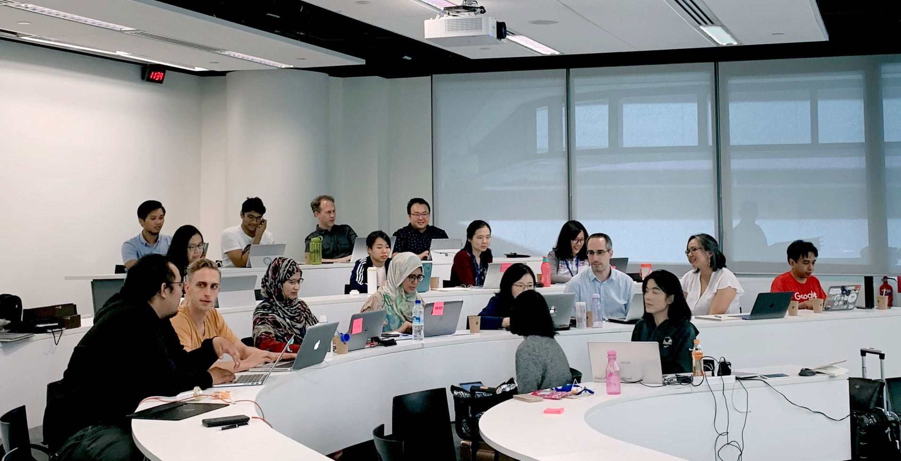

VELKOMMEN!
Hei!
Denne siden handler om min opplevelse som en første års student på OsloMet. Jeg begynte på IT studiet på OsloMet august 2021, og trives godt. På denne siden vil blant annet finne informasjon om hvordan jeg syntes overgangen fra elev til student var, en oppgave jeg har skrevet i faget teknologi og samfunn for programmerere, hvordan jeg har testet og sikret denne siden slik at den er tilegnelig for alle, og en side hvor jeg har prøvd å være litt kreativ.
Over i det blå feltet finner du menyen over alle de forskjellige sidene. Der kan du klikke for å komme til de andre sidene. Du kan alltid trykke på Logoen for å komme tilbake til denne siden.
God fornøyelse!